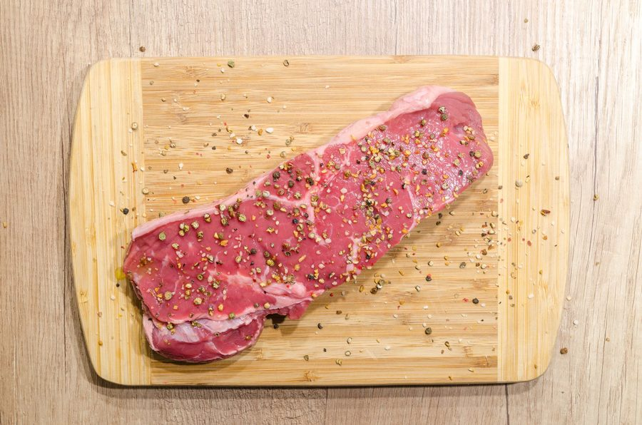

Técnica de base
Ponto da carne na grelha: o teste do dedo e o termômetro de cozinha
Técnica de base · 02/04/2026 · por Marina Cavalcante

Tem gente que já cortou uma peça de carne cara demais na dúvida, viu o miolo cru demais pro gosto de todo mundo à mesa e teve que devolver pra grelha — perdendo o suco, a crosta e a paciência dos convidados. E tem gente do outro lado, que grelhou "só mais um pouquinho pra garantir" e entregou um pedaço de sola. Os dois erros vêm do mesmo lugar: decidir o ponto pela cor por fora, ou pelo tempo no relógio, em vez de olhar pra temperatura real de dentro da carne.
A boa notícia é que existe um jeito objetivo de acertar o ponto sempre, e um jeito rápido de estimar quando não dá pra usar o método objetivo. Neste texto a gente separa os dois: o termômetro, que é a referência, e o teste do dedo, que é o atalho de quem grelha com frequência e já treinou a mão.
Por que "cor por fora" não serve pra decidir o ponto
A cor da crosta depende do tipo de grelha, da chama, da gordura da peça e até de quanto sal foi usado antes de assar — carnes com mais açúcar residual (marinadas, por exemplo) escurecem mais rápido sem estar mais cozidas por dentro. Duas peças da mesma espessura, na mesma grelha, no mesmo tempo, podem chegar em pontos internos diferentes se uma começou mais gelada que a outra. Por isso o tempo de relógio também é só um palpite: útil pra estimar quando virar, inútil pra garantir o ponto final.
O que não muda de peça pra peça é a relação entre temperatura interna e o que acontece com as proteínas da carne. É essa relação que vira a tabela abaixo.
Tabela de temperatura interna por ponto
Meça sempre no centro da parte mais espessa da peça, sem tocar osso ou a grelha por baixo — isso puxa a leitura pra cima e engana o termômetro.
| Ponto | Temperatura interna | Aparência do miolo |
|---|---|---|
| Mal passado | 49–52°C | Vermelho vivo, frio no centro |
| Ao ponto para mal passado | 53–57°C | Vermelho-rosado, morno |
| Ao ponto | 58–63°C | Rosado uniforme, suco claro |
| Bem passado | 68°C ou mais | Cinza-marrom por toda a peça |
Vale um adendo importante: essas faixas valem pra carne bovina em corte grelhado (bife, picanha, contrafilé). Aves e carne de porco pedem temperatura mínima mais alta por segurança — isso é assunto pra outro texto de técnica, não misture as tabelas.
O tempo de descanso conta tanto quanto a temperatura
Aqui está o detalhe que faz a diferença entre uma carne suculenta e uma carne que "parecia boa mas secou no prato": a temperatura interna continua subindo de 2°C a 4°C depois que a peça sai do fogo, porque o calor acumulado nas camadas externas ainda migra pro centro. Se você tirar a carne já na temperatura final do ponto que quer, ela vai passar do ponto durante o descanso.
Por isso a prática correta é retirar a peça da grelha um pouco antes — ao redor de 3°C abaixo do alvo — e deixar descansar:
- Bifes finos (até 2 cm): 3 a 5 minutos de descanso, cobertos com papel alumínio sem apertar.
- Peças espessas (picanha, maminha inteira): 8 a 10 minutos antes de cortar.
- Nunca corte assim que sair do fogo — o suco escapa todo pra tábua em vez de redistribuir dentro da fibra.
O descanso não é sobre "deixar esfriar" — é sobre dar tempo pro suco que se concentrou no centro da peça voltar a se espalhar por toda a fibra antes do corte.
Teste do dedo vs. termômetro: qual usar
O teste do dedo compara a firmeza do músculo da palma da mão (perto da base do polegar) em diferentes posições dos dedos com a firmeza da carne na grelha:
- Mão relaxada, sem tocar nada → firmeza equivalente ao mal passado.
- Polegar tocando o indicador → ao ponto para mal passado.
- Polegar tocando o dedo médio → ao ponto.
- Polegar tocando o mindinho → bem passado.
É rápido, não precisa de equipamento e funciona bem pra quem já grelhou centenas de peças e calibrou a mão pelo próprio termômetro antes. O problema é que é um teste de sensibilidade — depende de espessura da peça, do corte, da pressão que você aplica e da experiência de quem testa. Duas pessoas testando a mesma peça podem sentir "pontos" diferentes.
O termômetro de cozinha (tipo espeto, com leitura digital ou de mostrador) não tem essa margem de erro: ele lê o número, ponto final. Para quem está aprendendo a grelhar, ou pra peças caras que não dão margem pra erro, o termômetro é a ferramenta certa. O teste do dedo é o atalho de quem já treinou a mão contra o termômetro dezenas de vezes — não o substituto de quem nunca mediu nada.
Na prática, a combinação que funciona é: use o termômetro até ganhar confiança no seu olho e na sua grelha específica, e vá comparando mentalmente com a firmeza da carne no dedo. Depois de um tempo, o teste do dedo vira um jeito rápido de confirmar o que os olhos já estão vendo — mas sempre com o termômetro por perto pra peças mais espessas ou mais caras.
Erros comuns que estragam o ponto mesmo com termômetro certo
- Medir com a carne ainda gelada de geladeira: deixe a peça chegar perto da temperatura ambiente antes de ir pra grelha — carne gelada cozinha desigual, com o centro atrasado em relação à borda.
- Furar a carne várias vezes pra medir: cada furo é um caminho de saída pro suco. Meça uma vez, de preferência perto do fim do tempo estimado.
- Ignorar a espessura da peça: uma peça mais grossa precisa de mais tempo em fogo mais baixo pra chegar no centro sem queimar a superfície; se você usa o mesmo tempo de sempre, o miolo fica atrás.
Se você também costuma planejar o que vai grelhar dentro da semana, dá pra organizar tudo isso — incluindo os cortes e o dia certo de descongelar cada peça — direto no app Recheio, que a equipe do Panela Cheia usa pra distribuir as refeições sem repetir proteína dois dias seguidos.
O ponto da carne não é sorte nem "olho clínico" — é temperatura interna, e ela se mede. O termômetro tira a dúvida de peças caras e ensina a mão a reconhecer cada ponto pelo toque; o teste do dedo é o atalho de quem já fez essa calibração muitas vezes. Some os dois ao tempo de descanso certo e a carne sai da grelha no ponto que você escolheu — não no ponto que o relógio ou o olho decidiram por você.